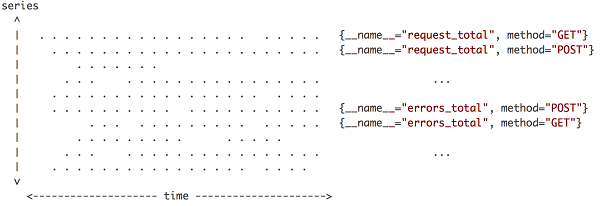

PromQL详解（一）
什么是PromQL?
PromQL是Prometheus提供一个函数式的表达式语言，可以使用户实时地查找和聚合时间序列数据。表达式计算结果可以在图表中展示， 也可以在Prometheus表达式浏览器中以表格形式展示，或者作为数据源, 以HTTP API的方式提供给外部系统使用。 PromQl 虽然以QL 结尾，但是它不是类似SQL的语言，因为在时间序列上执行计算类型时，SQL语言相对缺乏表达能力。而PromQL语言表达能力非常丰富，可以 使用标签进行任意聚合，还可以使用标签将不同的标签连接到一起进行算术运算操作。内置了时间和数学等很多函数可以使用。
数据模型与数据类型¶
Prometheus 自2.0版本开始，是一个完全重写的心存储引擎，新版本的变化比较大，不对旧数据Prometheus1.x版本做兼容升级。它使用的底层存储具备了完整的持久化 方案。Prometheus与其他主流时序数据库一样，在数据模型的核心定义上，一条Prometheus数据会包含一个指标名称（metrics name）和一个或多个标签（label）以及 Metrics Value。Metrics Name 加一组label作为唯一标识来定义Time Series，也就是时间线。在查询时，支持根据Label条件查找 Time Series，支持简单 的条件也支持复杂的条件。
promhttp_metric_handler_requests_total{code="200",instance="localhost:19100",job="prometheus"} 3237在上面查询语句的指标名称为 promhttp_metric_handler_requests_total 返回的数据中，我们已经知道Prometheus提供的四种核心Metrics类型，
分别是 Counter Gauge Historgram Summary。 该条数据中包括的标签有 code instance job，该数据记录值为 3237。
根据时间序列的特性，可以通过一张简单的数据点分布视图来体现时序数据库存储的垂直写、水平读，如下图:

上图展示了Prometheus的Time Series的相关介绍，横轴是时间，纵轴是时间线，区域内的点就是数据点。可以形象地描述为Prometheus每次接受数据，收到的是图中区域内
纵向的一条线。因为在同一时间，每条时间线只会产生数据点，但同时会有多条时间产生数据，把这些数据点连在一起，就是一条竖线。这个特性很重，直接影响数据写入和压缩的优化策略。
在Prometheus的表达式语言中，任何表达式或者子表达式都可以归为四种类型：
-
瞬时向量也叫即时向量 (instant vector) 包含每个时间序列的单个样本的一组时间序列，共享相同的时间戳。
-
区间向量也叫范围向量 (Range vector) 包含每个时间序列随时间变化的数据点的一组时间序列。
-
标量 (Scalar) 一个简单的数字浮点值
-
字符串 (String) 一个简单的字符串值(目前未被使用)
依赖于使用场景（例如：图表、表格），根据用户所写的表达式，仅仅只有一部分类型才适用这种表达式。例如：瞬时向量类型是唯一可以直接在图表中使用的。
字符串¶
字符串可以用单引号、双引号或者反引号表示
PromQL遵循与Go相同的转义规则。在单引号，双引号中，反斜杠成为了转义字符，后面可以跟着 a, b, f, n, r, t, v 或者\。 可以使用八进制(\nnn)或者十六进制(\xnn, \unnnn和\Unnnnnnnn)提供特定字符。
在反引号内不处理转义字符。与Go不同，Prom不会丢弃反引号中的换行符。例如：
"This is a String”‘These are Unescaped: \n \ \t’these are not unescaped: \n ' " \t"'浮点数¶
标量浮点值可以直接写成形式-[.(digits)]。
-2.43即时向量选择器¶
瞬时向量选择器可以对一组时间序列数据进行筛选，并给出结果中的每个结果键值对（时间戳-样本值）: 最简单的形式是，只有一个度量名称被指定。在一个瞬时向量中这个结果包含有这个度量指标名称的所有样本数据键值对。
下面这个例子选择所有时间序列度量名称为http_requests_total的样本数据：
http_requests_total
通过在度量指标后面增加{}一组标签可以进一步地过滤这些时间序列数据。
下面这个例子选择了度量指标名称为 http_requests_total，且一组标签为job="zookeeper-exporter", env="zookeeper-monitor":
http_requests_total{env="zookeeper-monitor",job="zookeeper-exporter"}
可以采用不匹配的标签值也是可以的，或者用正则表达式不匹配标签。标签匹配操作如下所示：
= 精确地匹配标签给定的值
!= 不等于给定的标签值
=~ 正则表达匹配给定的标签值
!~ 给定的标签值不符合正则表达式
例如：度量指标名称为http_requests_total，正则表达式匹配标签 env 为 zookeeper-monitor , process-monitor 的值，且http请求方法等于GET。
http_requests_total{env=~"zookeeper-monitor|process-monitor",method="get"}匹配空标签值的标签匹配器也可以选择没有设置任何标签的所有时间序列数据。正则表达式完全匹配。
向量选择器必须指定一个度量指标名称或者至少不能为空字符串的标签值。以下表达式是非法的:
{job=~".*"} #非法!
上面这个例子既没有度量指标名称，标签选择器也可以正则匹配空标签值，所以不符合向量选择器的条件
相反地，下面这些表达式是有效的，第一个一定有一个字符。第二个有一个有用的标签method。
{job=~".+"} # 正确!
{job=~".*", method="get"} # 正确!
标签匹配器能够被应用到度量指标名称，使用__name__标签筛选度量指标名称。例如：
表达式http_requests_total 等同于 {__name__="http_requests_total"}。
其他的匹配器，如 ：= ( !=, =~, !~) 都可以使用。下面的表达式选择了度量指标名称以 job: 开头的时间序列数据：
{name=~”^job:.*”} #
范围向量选择器¶
范围向量类似瞬时向量, 不同在于，它们从当前实例选择样本范围区间。在语法上，时间长度被追加在向量选择器尾部的方括号[]中，用以指定对于每个样本范围区间中的每个元素应该抓取的时间范围样本区间。
时间长度有一个数值决定，后面可以跟下面的单位：
s - seconds
m - minutes
h - hours
d - days
w - weeks
y - years
下面例子中, 选择过去10分钟内，度量指标名称为 http_requests_total， 标签为 job="prometheus" 的时间序列数据:
http_requests_total{job=~"zookeeper-exporter"}[10m]偏移修饰符¶
这个 offset 偏移修饰符允许在查询中改变单个瞬时向量和范围向量中的时间偏移。
下面的表达式返回相对于当前时间的前5分钟时的时刻, 度量指标名称为 http_requests_total 的时间序列数据：
http_requests_total offset 5m
注意：offset 偏移修饰符必须直接跟在选择器后面，例如：
sum(http_requests_total{method="get"} offset 5m) #正确.然而，下面这种情况是不正确的
sum(http_requests_total{method="get"}) offset 5m #非法.操作符¶
算术二元运算符¶
Prometheus的查询语言支持基本的逻辑运算和算术运算。对于两个瞬时向量, 匹配行为 可以被改变。
在Prometheus系统中支持下面的二元算术操作符：
+ 加法
- 减法
* 乘法
/ 除法
% 模
^ 幂等
二元运算操作符支持 scalar/scalar(标量/标量)、vector/scalar(向量/标量)、和 vector/vector(向量/向量) 之间的操作。
在两个标量之间进行操作符运算，得到的结果也是标量
在向量和标量之间，这个操作符会作用于这个向量的每个样本值上。例如：如果一个时间序列瞬时向量除以2，操作结果也是一个新的瞬时向量，且度量指标名称不变, 它是原度量指标瞬时向量的每个样本值除以2.
在两个向量之间，一个二元算术操作符作用在左边瞬时向量的每个样本值，且该样本值与操作符右边能匹配上的样本值计算，向量匹配。结果写入到一个没有度量指标名称的瞬时向量。
比较二元操作符
在Prometheus系统中，比较二元操作符有：
== 等于
!= 不等于
> 大于
< 小于
>= 大于等于
<= 小于等于
比较二元操作符被应用于 scalar/scalar（标量/标量）、vector/scalar(向量/标量)，和 vector/vector（向量/向量）。比较操作符得到的结果是 bool布尔类型值，返回 1 或者 0 值。
在两个标量之间的比较运算，bool结果写入到另一个结果标量中。
瞬时向量和标量之间的比较运算，这个操作符会应用到某个当前时刻的每个时间序列数据上，如果一个时间序列数据值与这个标量比较结果是false，则这个时间序列数据被丢弃掉，如果是true, 则这个时间序列数据被保留在结果中。
在两个瞬时向量之间的比较运算，左边度量指标数据中的每个时间序列数据，与右边度量指标中的每个时间序列数据匹配，没有匹配上的，或者计算结果为false的，都被丢弃，不在结果中显示。否则将保留左边的度量指标和标签的样本数据写入瞬时向量。
逻辑/集合二元操作符¶
逻辑/集合二元操作符只能作用在即时向量， 包括：
and 交集
or 并集
unless 补集
vector1 and vector2 的逻辑/集合二元操作符，规则：vector1瞬时向量中的每个样本数据与vector2向量中的所有样本数据进行标签匹配，不匹配的，全部丢弃。运算结果是保留左边的度量指标名称和值。
vector1 or vector2的逻辑/集合二元操作符，规则: 保留vector1向量中的每一个元素，对于vector2向量元素，则不匹配vector1向量的任何元素，则追加到结果元素中。
vector1 unless vector2的逻辑/集合二元操作符，又称差积。规则：包含在vector1中的元素，但是该元素不在vector2向量所有元素列表中，则写入到结果集中。
向量匹配¶
向量之间的匹配是指右边向量中的每一个元素，在左边向量中也存在。这里有两种基本匹配行为特征：
一对一，找到这个操作符的两边向量元素的相同元素。默认情况下，操作符的格式是vector1 [operate] vector2。如果它们有相同的标签和值，则表示相匹配。ingoring关键字是指，向量匹配时，可以忽略指定标签。on关键字是指，在指定标签上进行匹配。格式如下所示：
[vector expr] [bin-op] ignoring([label list]) [vector expr]
[vector expr] [bin-op] on([lable list]) [vector expr]
例如样本数据：
method_code:http_errors:rate5m{method="get", code="500"} 24
method_code:http_errors:rate5m{method="get", code="404"} 30
method_code:http_errors:rate5m{method="put", code="501"} 3
method_code:http_errors:rate5m{method="post", code="404"} 21
method:http_requests:rate5m{method="get"} 600
method:http_requests:rate5m{method="delete"} 34
method:http_requests:rate5m{method="post"} 120查询例子：
method_code:http_errors:rate5m{code=”500”} / ignoring(code) method:http_requests:rate5m两个向量之间的除法操作运算的向量结果是，每一个向量样本http请求方法标签值是 500，且在过去5分钟的运算值。
如果没有忽略 code="500" 的标签，这里不能匹配到向量样本数据。两个向量的请求方法是 put 和 delete 的样本数据不会出现在结果列表中
多对一和一对多的匹配，是指向量元素中的一个样本数据匹配标签到了多个样本数据标签。这里必须直接指定两个修饰符group_left或者group_right， 左或者右决定了哪边的向量具有较高的子集。
\ \ ignoring(\) group_left(\) \
\ \ ignoring(\) group_right(\) \
\ \ on(\) group_left(\) \
\ \ on(\) group_right(\) \这个 group 带标签的修饰符标签列表包含了“一对多”中的“一”一侧的额外标签。对于on标签只能是这些列表中的一个。结果向量中的每一个时间序列数据都是唯一的。
group 修饰符只能被用在比较操作符和算术运算符。
查询例子：
method_code:http_errors:rate5m / ignoring(code) group_left method:http_requests:rate5m在这个例子中，左向量的标签数量多于左边向量的标签数量，所以我们使用group_left。右边向量的时间序列元素匹配左边的所有相同method标签:
{method=”get”, code=”500”} 0.04 // 24 /600
{method=”get”, code=”404”} 0.05 // 30 /600
{method=”post”, code=”500”} 0.05 // 6 /600
{method=”post”, code=”404”} 0.175 // 21 /600多对一和一对多匹配应该更多地被谨慎使用。经常使用 ignoring(\<labels\>) 输出想要的结果。
聚合操作符¶
Prometheus支持下面的内置聚合操作符。这些聚合操作符被用于聚合单个即时向量的所有时间序列列表，把聚合的结果值存入到新的向量中。
sum (在维度上求和)
max (在维度上求最大值)
min (在维度上求最小值)
avg (在维度上求平均值)
stddev (求标准差)
stdvar (求方差)
count (统计向量元素的个数)
count_values (统计相同数据值的元素数量)
bottomk (样本值第k个最小值)
topk (样本值第k个最大值)
quantile (统计分位数)
这些操作符被用于聚合所有标签维度，或者通过 without 或者 by 子句来保留不同的维度。
\([parameter,] \) [without | by (\)] [keep_common]parameter 只能用于 count_values, quantile, topk和bottomk。without移除结果向量中的标签集合，其他标签被保留输出。 by 关键字的作用正好相反
即使它们的标签值在向量的所有元素之间。keep_common子句允许保留额外的标签（在元素之间相同，但不在by子句中的标签）
count_values 对每个唯一的样本值输出一个时间序列。每个时间序列都附加一个标签。这个标签的名字有聚合参数指定，同时这个标签值是唯一的样本值。每一个时间序列值是结果样本值出现的次数。
topk和bottomk与其他输入样本子集聚合不同，返回的结果中包括原始标签。by和without仅仅用在输入向量的桶中。
例如：如果度量指标名称http_requests_total包含由group, application, instance 的标签组成的时间序列数据，我们可以通过以下方式计算去除 instance 标签的 http 请求总数：
sum(http_requests_total) without (instance)如果我们对所有应用程序的http请求总数，我们可以简单地写下：
sum(http_requests_total)统计每个编译版本的二进制文件数量，我们可以如下写：
count_values("version", build_version)
通过所有实例，获取http请求第5个最大值，我们可以简单地写下：
topk(5, http_requests_total)二元运算符优先级
在Prometheus系统中，二元运算符优先级从高到低：
^
*, /, %
+, -
==, !=, <=, <, >=, >
and, unless
or